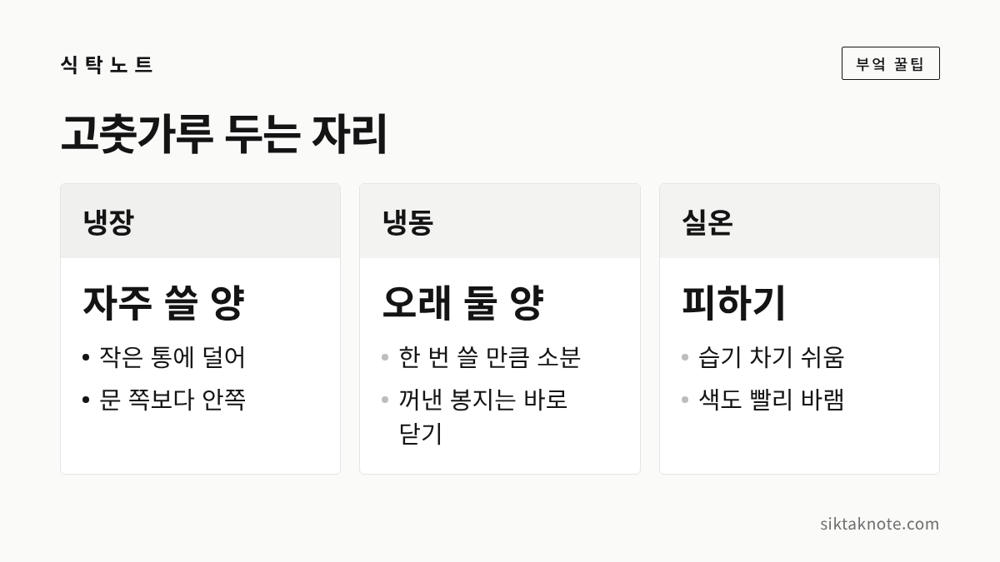
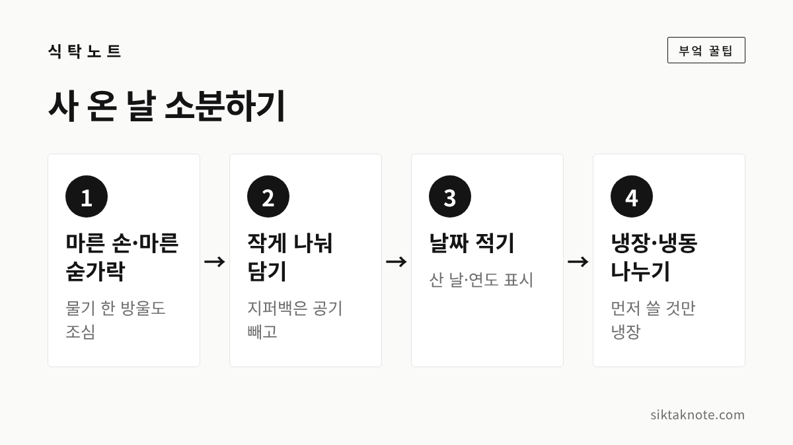

고춧가루 보관법 — 냉장·냉동 보관, 소분, 곰팡이·벌레 생겼을 때

3줄 요약
- 고춧가루는 습기와 빛에 약해서, 밀폐 용기나 지퍼백에 담아 차갑게 두는 게 좋습니다.
- 자주 쓰는 양만 작게 덜어 냉장하고, 나머지는 소분해서 김치냉장고나 냉동실에 두세요.
- 곰팡이가 피었거나 벌레가 생긴 고춧가루는 아깝더라도 버리는 게 안전합니다.

햇고춧가루가 나오는 가을이면 김장을 앞두고 고춧가루를 넉넉히 들여놓는 집이 많은데요. 고춧가루는 한 번 사면 몇 달씩 두고 쓰는 양념이라, 처음 어떻게 담아 두느냐에 따라 색과 맛이 꽤 달라집니다. 사 온 날 조금만 손을 써 두시면 다음 김장 때까지 훨씬 편하게 쓰실 수 있을 것 같습니다.
고춧가루가 싫어하는 건 습기와 빛이에요
고춧가루는 바싹 마른 가루라서, 공기 중의 습기를 금방 빨아들입니다. 습기를 먹으면 가루가 뭉치고, 심하면 곰팡이가 피기도 하거든요. 농촌진흥청이 고춧가루와 건고추를 여러 온도(-20℃, 0℃, 4℃, 10℃, 25℃, 30℃)와 습도(51%, 69%, 93%)에서 10개월 넘게 저장해 본 실험에서도, 습도가 69% 이상이면 고춧가루의 수분함량과 수분활성도가 올라갔다고 합니다. 그래서 농촌진흥청은 습도 69% 미만에서 저장하라고 안내하고 있습니다.
빛도 조심해야 합니다. 고춧가루의 붉은색은 시간이 지나면서 조금씩 옅어지는데요. 국내 학술 연구에서는 온도가 높을수록, 그리고 빛이 통하는 투명한 봉지에 담았을 때 색이 더 많이 바랬고, 빛을 막는 알루미늄 포장에 담아 낮은 온도에 두었을 때 색이 가장 잘 지켜졌다고 보고했습니다. 투명한 병에 담아 창가나 가스레인지 옆에 두는 건 피하시는 게 좋습니다.
실온에 오래 두지 않습니다
농촌진흥청 실험에서 25℃ 이상의 상온·고온에서는 품질 면에서 장기 저장에 알맞지 않았다고 합니다. 부엌 찬장은 생각보다 따뜻하고, 요리할 때 김도 자주 오르는 자리죠. 며칠 안에 다 쓸 아주 적은 양이 아니라면, 고춧가루는 냉장고나 냉동실에 두시는 게 좋습니다.
그럼 냉장일까요, 냉동일까요
여기서 많이들 헷갈리시는데요. 농촌진흥청 실험에서는 고춧가루를 10℃에 두었을 때 곰팡이가 가장 적게 생겼다고 합니다. 다만 집에서 10℃를 딱 맞춰 두기는 어렵죠. 그래서 현실적으로는 이렇게 나눠 두시는 걸 권합니다.
- 한두 달 안에 쓸 양: 밀폐 용기에 담아 냉장고에 둡니다. 문 쪽은 여닫을 때마다 온도가 오르내리니 안쪽 칸이 낫습니다.
- 몇 달 두고 쓸 양: 작게 나눠 지퍼백에 담고 공기를 뺀 뒤 김치냉장고나 냉동실에 둡니다.
냉동할 때 꼭 지킬 게 하나 있는데요. 차가운 봉지를 꺼내 따뜻한 부엌에서 한참 열어 두면, 봉지 안쪽에 물방울이 맺히면서 고춧가루가 습기를 먹게 됩니다. 그러니 필요한 만큼만 얼른 덜어 내고 바로 다시 닫아 넣으세요. 이 일을 줄이려고 처음부터 작게 나눠 담는 겁니다.
사 온 날 작게 나눠 담아요

- 손과 숟가락, 용기에 물기가 없는지 먼저 확인합니다. 젖은 숟가락 한 번이 곰팡이의 시작이 되기도 하거든요.
- 큰 봉지 그대로 두지 말고, 한두 달 쓸 양씩 작은 지퍼백이나 밀폐 용기에 나눠 담아요.
- 지퍼백은 공기를 최대한 빼고 닫습니다. 빛이 걱정되면 지퍼백을 불투명한 통이나 봉투에 한 번 더 넣어 두면 좋습니다.
- 봉지마다 산 날짜를 적어 두세요. 먼저 산 것부터 꺼내 쓰기 쉽습니다.
요리하다가 끓는 냄비 위에서 봉지째 고춧가루를 털어 넣는 일은 피하시는 게 좋습니다. 김이 봉지 안으로 그대로 들어가거든요. 쓸 만큼 작은 그릇에 덜어 놓고 쓰는 게 고춧가루를 오래 지키는 방법입니다.
색이 바랬다면, 벌레·곰팡이가 보인다면
색이 조금 옅어지고 향이 덜해진 정도라면 상한 건 아닙니다. 묵은 고춧가루는 찌개나 볶음처럼 오래 끓이는 요리에 먼저 쓰고, 새 고춧가루는 색이 중요한 김치나 무침에 쓰시면 좋겠습니다.
하지만 아래와 같다면 먹지 않는 게 좋습니다.
- 군데군데 하얗거나 푸른 곰팡이가 보일 때
- 퀴퀴하거나 쉰 냄새가 날 때
- 가루가 축축하게 뭉쳐 덩어리진 채 풀리지 않을 때
- 벌레가 보이거나, 실처럼 엉긴 거미줄 같은 것이 생겼을 때
곰팡이가 핀 부분만 덜어 내면 되지 않을까 싶으실 텐데요. 식품의약품안전처는 곰팡이독소가 열에 매우 강해서 데우거나 끓여도 완전히 없애기 어렵고, 식품 안쪽으로 스며들 수도 있으니 곰팡이 핀 식품은 먹지 않는 게 안전하다고 안내합니다. 아깝더라도 그 봉지는 통째로 버리시는 게 마음 편합니다. 벌레가 나온 봉지 옆에 있던 고춧가루도 한 번씩 열어 살펴보세요.
김장철에는 양부터 가늠해요
김장 고춧가루는 한꺼번에 많이 사게 되는데요. 농촌진흥청은 고춧가루가 건고추보다 곰팡이가 더 잘 생긴다며, 필요한 양만 빻아서 오래 두지 말고 빨리 쓰는 게 바람직하다고 안내하고 있습니다. 실험에서도 모든 시료에서 고춧가루가 건고추보다 곰팡이 발생률이 높았다고 합니다.
그래서 이렇게 해 보시면 좋겠습니다.
- 지난해 김장 때 실제로 쓴 양을 떠올려 보고, 그만큼에 평소 반찬용 몇 달 치만 더해 삽니다.
- 건고추로 사 둘 수 있다면, 김장용만 미리 빻고 나머지는 건고추로 두었다가 필요할 때 빻는 것도 방법입니다.
- 지난해 고춧가루가 남아 있다면 김장 전에 먼저 상태를 살펴보고, 괜찮은 것부터 찌개용으로 쓰세요.
자주 묻는 질문
고춧가루 유통기한은 얼마나 되나요?
제품마다 다르니 봉지에 적힌 날짜를 따르시면 됩니다. 집에서 빻은 고춧가루는 날짜가 따로 없으니, 봉지에 빻은 날을 적어 두고 오래된 것부터 쓰세요.
냉동한 고춧가루가 뭉쳤어요. 써도 되나요?
곰팡이나 이상한 냄새가 없고 손으로 비볐을 때 잘 풀린다면 쓰셔도 됩니다. 다만 꺼냈다 넣었다를 반복하며 습기를 먹은 것일 수 있으니, 다음부터는 더 작게 나눠 두시는 게 좋겠습니다.
페트병에 담아 두면 어떤가요?
깨끗하고 바싹 마른 병이라면 밀폐는 잘 되는 편입니다. 다만 투명한 병은 빛이 통하니, 어두운 곳이나 냉장고 안쪽에 두세요.
고춧가루는 한 해 내내 식탁을 붉게 채워 주는 양념이라, 처음 담는 손길이 오래 갑니다. 김장 재료 가운데 마늘 보관법, 생강 보관법, 무 보관법도 함께 봐 두시면 준비가 한결 수월하실 것 같습니다.